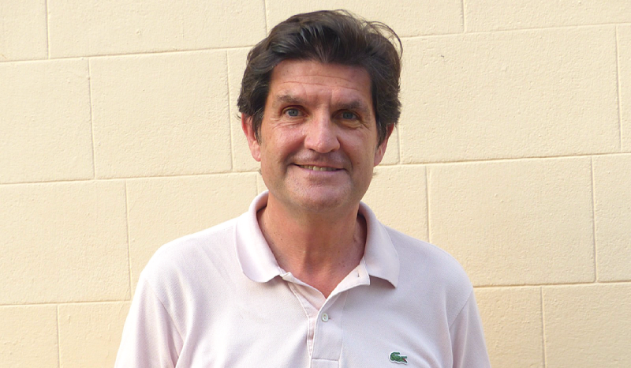

01
09.30— 10.00 h
Ens posem en camí
Sortida en furgoneta des de la Fundació o arribada directa a Mastinell amb vehicle propi.
Una jornada per aturar-nos, mirar endavant i avançar plegats
La trobada
Sortim del nostre entorn habitual per dedicar temps de qualitat a les converses que fan avançar la Fundació.
Reflexionarem sobre el futur, posarem en comú els projectes que ja estan transformant l’entitat i reforçarem la manera com treballem plegats.
L’agenda detallada de la jornada de treball
De les 9.30 a les 17.00 h
Sortida en furgoneta des de la Fundació o arribada directa a Mastinell amb vehicle propi.
Conversa motivacional amb Carlos Esteban, coach d’equips i lideratge.
Un espai informal per conversar i agafar forces.
L’equip professional de la Fundació compartirà les principals línies de futur de l’entitat: el nou pla estratègic, el procés de rebranding i altres projectes clau.
Visita a les caves i tast de vins i caves.
Dinar al restaurant En Rima i cloenda de la jornada.
Com hi anirem
Sortida a les 9.30 h des de la seu, amb les furgonetes.
Trobada directament a Mastinell abans de les 10.00 h.
Abans del 9 de setembre
Indica’ns quina opció de menú prefereixes i si vindràs amb les furgonetes o amb vehicle propi.
Confirmar assistència i menú ↗Emplenar el formulari no et portarà més d’un minut.
Us convido a reservar-nos aquest dia per sortir del ritme habitual, compartir una mirada llarga sobre la Fundació i continuar construint, plegats, el seu futur.